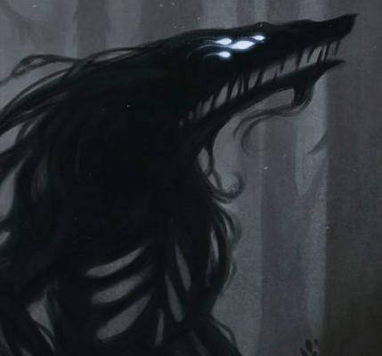

Tier 1: Loss of Control
There is nothing... nothing... nothing...The red haired man wakes up in cold sweat on his bed of hay inside a cheap inn next to the cordon of the Spires.
Visions of slaughter and him laughing manically as the bodies drop around him. All of them will die, all of them will pay for the injustices
they commit, and out of the bloody fog he alone will emerge, a benevolent ruler, a god who the meek will herd towards in search of salvation.
A god who the cruel will fear, for drawing his ire is a sign of sure demise. Him! Him! Him!
Roxie stands up, his hands shaking still in a bout of mercurial despair.
He sees his silhouette splitting, as if there is something attempting to emerge from his skin.
With considerable effort, he pushes the urge down, deep into the shackles he has built around it,
that strangle both beast and man.
As the tremors subside, Roxie walks to the window, looking at the edge of the world.
Soon he will be far from here, far from the shame of his past.
 Shape of vengeance
Shape of vengeance
At the start of every turn,
Roxie rolls a Wisdom saving throw against a DC of 1 (this ability is excluded from the nat 1 rules,
and you cant purposely fail it), if he fails, he unleashes something, simply referred to as Revengeance (stats listed below).The DC is increased by 1 per every saving throw failed, damage equal to your character level taken or dealt, fails on saving throws against your spells and/or abilities and any loss of control effects applied (aka grappled, restrain, incapacitated, charmed, frightened, paralyzed, stunned).
Upon unleashing the Revengeance the can stay in this state for up to 1 minute. Every turn you are affected by it you take 1 damage doubling at the start of every subsequent turn. Upon leaving the state you gain a point of exhaustion. Your body cannot die while the Revengeance is active.
Revengeance
AC 4+(your level)
HP 20 times your level
Speed 45 (Cannot go further than 60 feet away from the body of Roxie, although he can carry it)
Str (Your stats)+ your level
Dex (Your stats)+your level
Con (Your stats)+your level
Int (Your stats)
Wis (Your stats)
Cha (Your stats)
Resistances and immunities:
Immune to charms, sleep, Fears and dominations.
Resistant to all damage.
Abilities
Slash of darkness (2)
(Action)
Slashes the target for 1d6(*your level) in necrotic damage. Its to hit bonus is equal to your level.
Droplets of mercurial agony
(Bonus action)
Sprays droplets in a 90 foot cone, dealing 1d6 damage to all characters caught in its path.
Vindictive arcanum
(Bonus Action)
Casts a spell from Roxies spell list with a cast time of 1 action or 1 bonus action.
 Supressed Vitality of revenge
Supressed Vitality of revenge
Once the Revengence has been freed, it is docile for the next day, and will not force Roxie to make saving throws.
The saving throw is reset to 1.
Tier 2: Emptiness where once beauty thrived
When you look upon your reflection...Do you see grace or atrocity?
When you tread upon a path of desperation
Will you be able to see?
Past where this veils ends lie
Where creation went to die
Where the corpse lies
Of the soul divine
The viridescent light, lures you in
To grasp your essence threads
Remake you whole wherein
You will transcend the path a mortal led
But light is gone, its green eclipsed
The broken cycle, their mistake
In two torn and then remade
For this day to never end
 The friendly shadows
You can now take pieces of Revengeance and grant them temporary consciousness.As a bonus action, you may choose to summon a fragment of Revengeance and immediately use one of its abilities.
Doing this will force you to spend either your action, or your bonus action on using one of its abilities. (Its abilities are those of Revengeance, but the damage is divided by two and rounded down. And spells are limited to those equal to your proficiency score or less) On subsequent turns you can use the Bonus Action or an Action to give out orders to the fragments.
If you don’t satiate its eagerness it will drain you at the end of your turn reducing your max HP by 1d10+your level until the next long rest and dissipating. Dismissing the fragment requires an action.